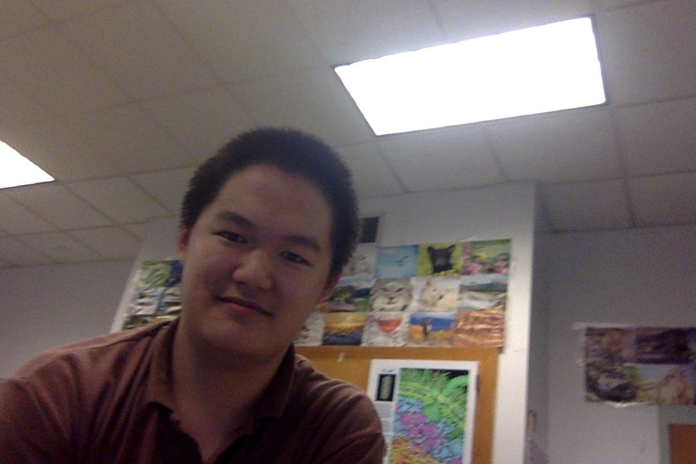

Why use our services? We are the premier service for bio prep. We use guaranteed test questions to get you a guaranteed score. 100% satisfaction guaranteed!
Our methodology Our methodology has been shown by clinical studies to be the most effective way to study. Through our use of proprietary white space, we are able to achieve results like no other. According to one user of our preparatory program, our program was "the highlight of his life, as it allowed him to barely pass, instead of fail."(Ryan '18).
Our features Through our seamless experience and interactivity, user engagement is further perpetuated to create a satisfying user experience. Our use of flashcards is completely revolutionary as we have raised over 10M of venture capital in our serial B funding round. We are the latest, most trendiest startup, and are progressing to be a Fortune 500 company.
Our Team

Ryan Tong CEO Ryan grew up in Afghanistan, and lost most of his relatives in a guerilla war. This profoundly affected him, as he realized that this was all the result of an exploitative capitalistic system. He set out to be a visionary by creating the first socialist company, where everybody, even the expendable, would be put on the team page.
Jonathan Wong CTO Jonathan politically identifies as a fisical republican who grew up in Central Park, NYC. He was sued by Mr. Trump for allegedly hacking his Twitter account and posting pictures of cuddly pandas. On his free weekends, Jonathan loves spending his time browsing the dark deep places on 4chan and Reddit.
Allen Yang Expendable Allen grew up in the sewers of Chicago, living with crippling depression. Deciding to do do something better with his life, he decided to move elsewhere, and thus somehow ended up here. We don't know how he got here, but we do know that he resembles a stereotypical Asian teenager. Allen's favorite hobbies include memeing and flame-baiting Trump.